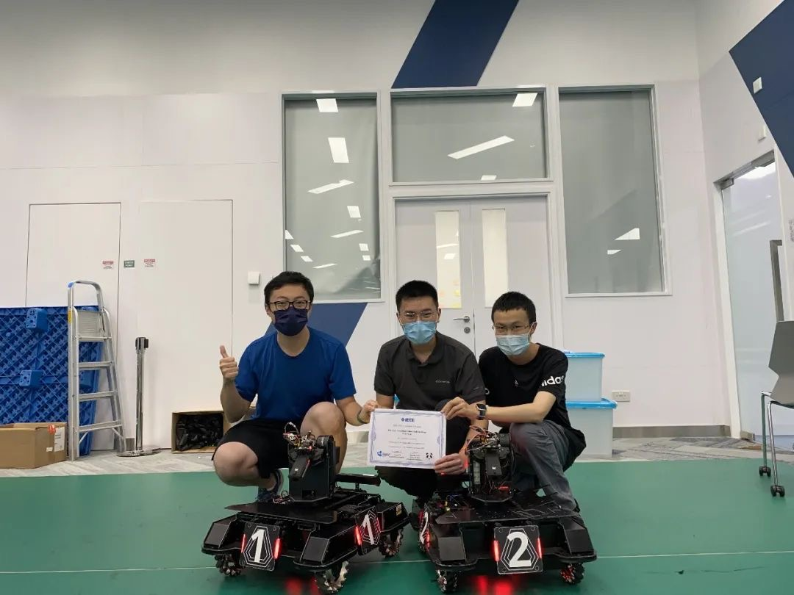
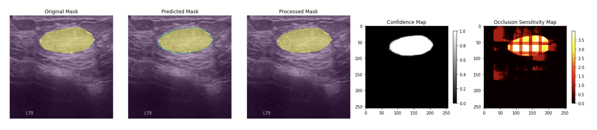
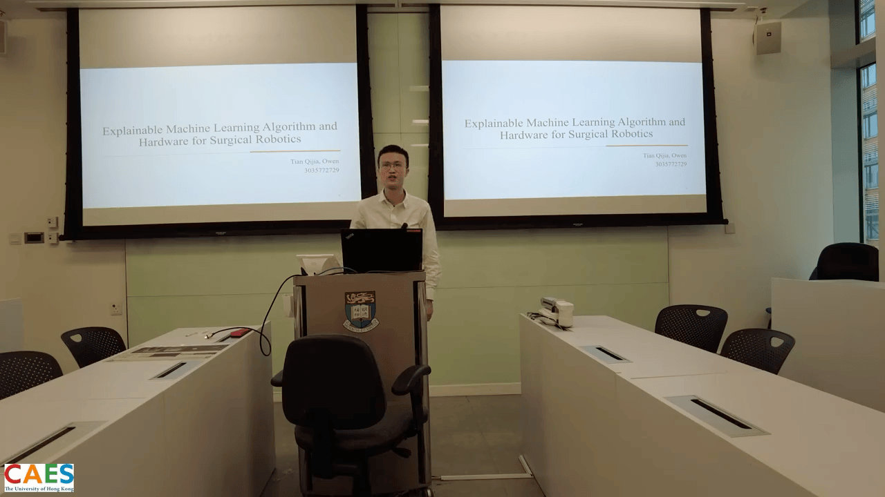

EDUCATION
The University of Hong Kong, Sept 2024 - Nov 2025;
Msc in Computer Science, HKU.
Courses: Natural Language Processing (A); Introduction to Unmanned Systems (A-); Information Security: Attacks and Defense (Pending); Big Data Management (Pending).
The University of Hong Kong, Sept 2020 - June 2024
BENG in Computer Engineering, HKU, with First Class Honor, GPA: 3.77/4.3, Rank: 1/52;
Courses: Senior Design Project (A-); Introduction to Deep Learning for Computer Vision (A+); Algoirithm Design (A); Digital System Design (A+); Computer Architecture (A); Control System I (A+); Probabilistic System Analysis (A+); Signal and Linear Systems (A-).
PROJECT EXPERIENCE
Core Systems Developer, VulkanECS Game Engine - MSc Dissertation Project
2025.02-2025.07
- Architected and implemented high-performance Entity Component System (ECS) with archetype-based entity management, supporting 10,000+ entities at 100+ FPS;
- Designed efficient ECS query and iteration mechanisms optimized for cache performance and scalability;
- Developed comprehensive sample game demonstration (3D vampire survivor style) showcasing engine capabilities;
- Led system testing and performance optimization, contributing 25% of overall project development;
Developer, FridayDoc - Modular AI Research Assistant Framework, Group Project
2024.11-2024.12
- Developed a modular AI research assistant framework enhancing OS-Copilot with script-based architecture;
- Implemented hierarchical documentation system combining high-level tool menus and detailed guides;
- Created platform integrations for Hugging Face, GitHub, and X (Twitter) for automated data retrieval;
- Designed content filtering system to reduce irrelevant information in LLM prompts;
- Improved task decomposition accuracy through dynamic tool selection;
- Validated framework usability through case studies and prompt engineering.
Developer, Senior Design Project - Explainable Machine Learning Algorithm and Hardware For Surgical Robot, Hong Kong
2023.09-2024.04
- Developed an efficient AI segmentation method for breast tumors with focus on interpretability;
- Implemented Attention UNet for accurate segmentation under computational constraints;
- Handled data preprocessing, model training, and evaluation;
- Achieved stable tumor segmentation, IoU indicated room for improvement;
- Developed surgical robot hardware prototype with motor control and real-time processing;
- Suggested further research for better model interpretability across imaging modalities.
Research Assistant, AI-Powered Smart Petition Management System, Ningbo
2022.01-2022.12
- Developed an AI system to streamline petition management with data analytics and automation;
- Classified over 700 types of petition work orders with high accuracy;
- Integrated data from petition records, historical cases, and policy data to enhance workflow;
- Played a key role in algorithm design and model framework development;
Research Assistant, Research on Intelligent Maintenance and Irrigation Techniques for Elevated Greenery along Waterfronts, Ningbo
2021.12-2022.06
- Developed an IoT-enabled intelligent irrigation solution for elevated greenery to optimize water usage;
- Implemented a Transformer-based model for accurate, on-demand water prediction;
- Used encoder-decoder architecture to enhance prediction accuracy;
- Trained predictive models with historical environmental data for real-world use;
- Designed a system that reduces workload and detects faults, lowering plant mortality;
- Led requirements gathering, algorithm research, and IoT sensor setup;
INTERNSHIPS
Fintech Intern, China Construction Bank Corporation, Ningbo
2023.07-2023.08
- Tested websites and systems using Jmeter and Python;
- Worked with the development team to resolve software issues and optimize platform functionality;
- Analyzed user feedback and usage data to recommend UX improvements;
- Engaged with senior developers and fintech experts to learn industry trends;
Software and Hardware Development Intern, Ningbo Zhongda Leader Intelligent Transmission Co., Ltd., Ningbo
2023.06-2023.07
- Involved in motor manufacturing, design, and testing;
- Collaborated on motor component design and prototyping to improve performance;
- Performed testing and quality assurance to meet industry standards;
HONORS & AWARDS
| Faculty of Engineering Peer Mentorship Programme Certificate 2023-2024 | 2024.07 |
| Faculty of Engineering Peer Mentorship Programme Certificate 2022-2023 | 2023.07 |
| Dean’s Honors List 2021-2022 | 2023.02 |
| The 2022 RobotMaster Sim2Real Challenge First Prize | 2022.08 |
| Dean’s Honors List 2020-2021 | 2022.01 |
SKILLS & LANGUAGES
- Languages: Mandarin (Native), English (Work language), Cantonese (Basic)
- IT skills: Pytorch, SQL, VHDL, MATLAB, C, Python
EXTRACURRICULAR ACTIVITIES
| Faculty Student Adviser (FSA), Faculty of Engineering, HKU, Hong Kong | 2022.09-2024.06 |
| Assistant, Guizhou Counterpart Assistance Activities, Ningbo Public Security Bureau, Ningbo | 2021.07 |
APPENDIX

The 2022 RobotMaster Sim2Real Challenge First Prize Team

Part of the results of the Final Year Project

Final Year Project Presentation
Senior Design Project Link
Certificates Copy
Last updated on 2025-05-25
Press 'h' to hide the navigation bar and appendix and 'j' to show it.
Press '0' to toggle header style.